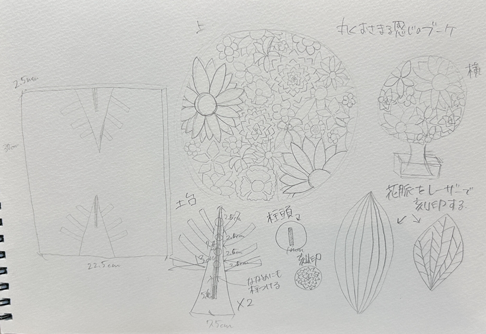
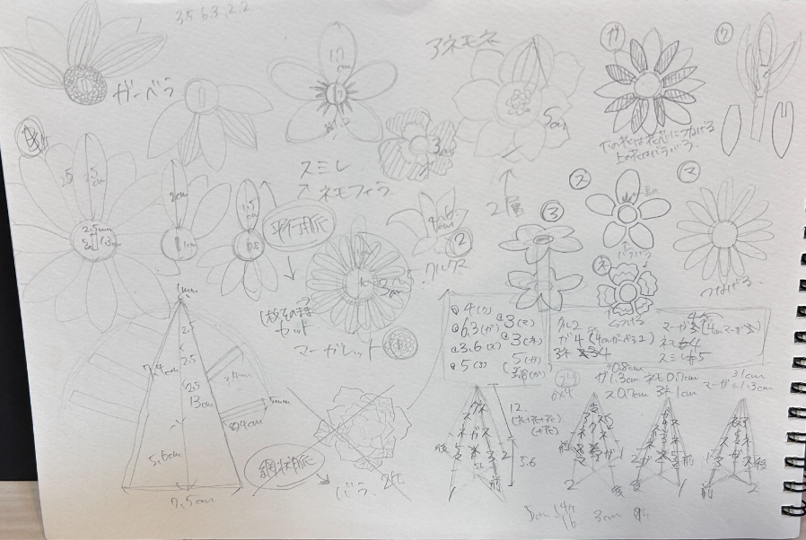
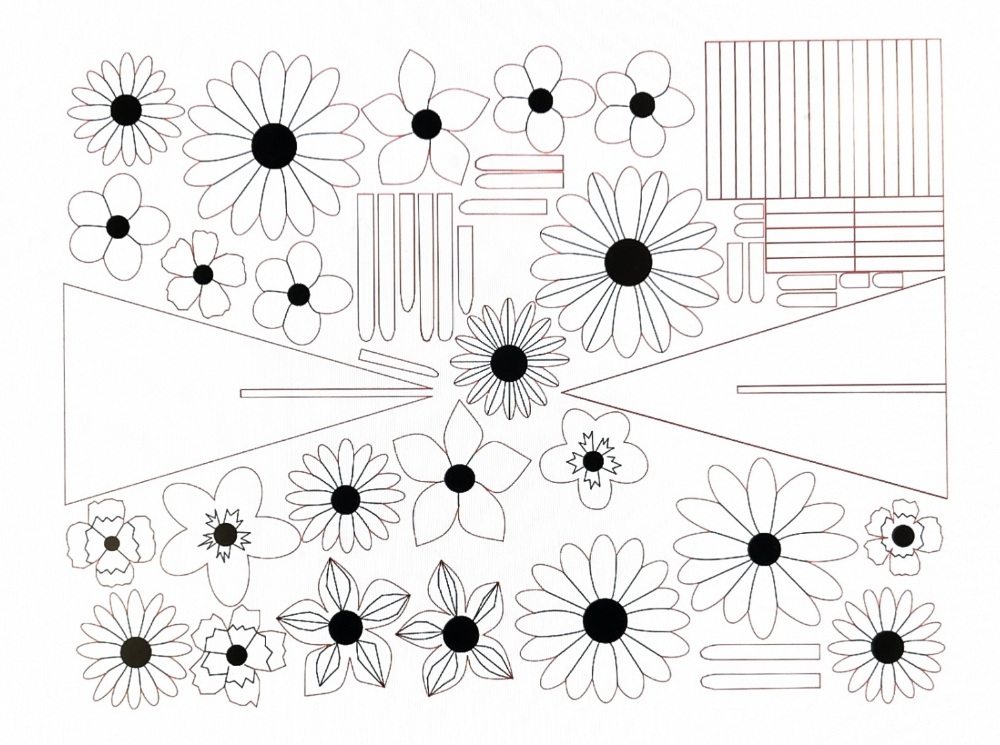

動機：生花は色鮮やかで綺麗な反面、すぐ枯れてしまう点、虫が寄ってくるという点で日常生活に取り入れにくいという面があるため花束を木にすることでより多くの人が花に触れられるのではないかと考えた。また最近はシンプルなデザインの部屋が多いため木の茶色で統一感を持たせることができるのではないかと考えた。
制作過程
デッサン：

試作品:立体での完成系の想像が難しかったため画用紙で試作品を作成

使用アプリ：fusion,adobe illustrator(fablab)
fusion設計図：

illustrator設計図：

反省点：fusionでスケッチを分けてかいてしまっていたので一つのスケッチにすることに時間をかけてしまった、またillustratorでの編集は初めてだったこともあり操作方法に慣れるのに時間がかかってしまったことや線が多く複雑なところが多かった。
htmlのタグ